There are a couple white lies there. There are not 9 objects, there are only 6. I was optimistic when I made this image. Also, the screenshot key is F9, as Windows XP seems to intercept the PrScr key.
Our scene is a dump. It's an abandoned quarry out in the country where bumpkins go to dump their trash and fire their shotguns. It's a beautiful day with a bright blue sky, a few fluffy clouds rolling by, blowing grass, and a still pond.
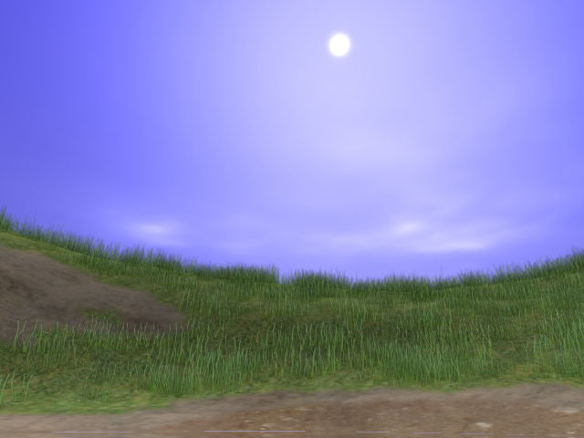We focus on the water. In the following images we see a couch reflecting off the water, and a stove refracting below. To produce these effects, the scene is rendered in three passes. A clipping plane is used to discern geometry above the water from that below. In the first pass, all geometry above the water is rendered upside down, giving the reflection buffer. In the second pass, all geometry below the water is rendered right side up, giving the refraction buffer. In the third pass, the scene is rendered normally and the water plane is rendered using these reflection and refraction maps.
The water fragment shader is the meat of the system. The view vector is transformed to the water's tangent space, where the water normal map (described below) describes the ripples. Here, Fresnel's equation is used to determine whether each pixel is reflecting or refracting. The GLSL reflect and refract functions are called with the view vector and water normal to determine how much distortion occurs. This distortion maps onto displacement of the texture coordinates used to index the reflection and refraction maps. Per-pixel normalization of the water height map and bilinear interpolation of the reflection and refraction maps result in smoothly shifting continuous distortions of the scene as viewed off and through the water.
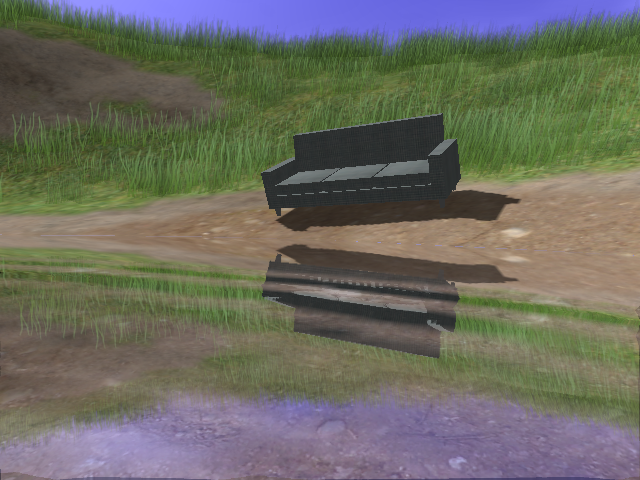 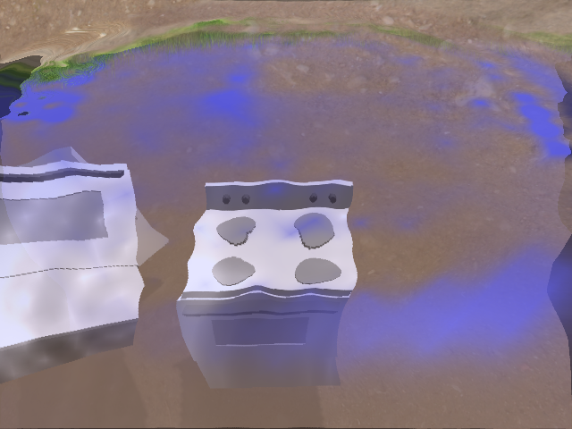The ripples are produced by a particle simulation using a Verlet integrator in a fragment shader. The image height map is 256 pixels square. OpenGL does not allow a single texture to be both written-to and read-from simultaneously, so a texture-object/framebuffer-object ping-pong technique is used. Because Verlet integration requires the previous height map to discern velocity, a third height map is necessary. This triple-buffered system allows each step of the simulation to be performed in a single pass. This technique is extremely cheap. My original implementation used a 512x512 image map and no significant performance penalty was notable. The final 256x256 buffer was selected simply because larger waves look better.
A Verlet integrator is easy to influence. To perturb the surface, one needs only to modify the current particle positions. Because the integrater infers velocity implicitly from position change, it will view pixel buffer modifications as changes in velocity.
The objects in this scene interact with each other thanks to ODE. The ODE world state is transmitted to the water state simply by rendering the objects directly into the water height map. An orthogonal projection with near and far planes just above and below the water surface insures that only objects that make contact with the surface will influence the ripple simulation.
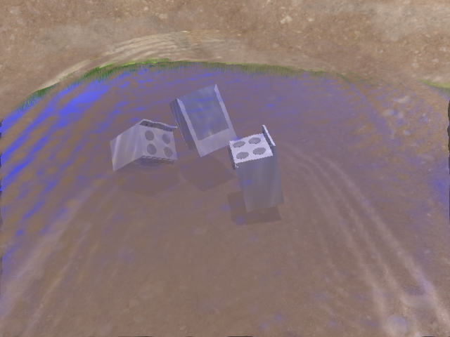Once the water height map is computed, a normal map is generated using finite difference in another pass. This normal map is used in the water rendering pass, as described above.
The water normal map is also used for the generation of underwater caustics by the fragment shaders applied to the terrain and objects. The caustics renderer is a hack. For each vertex of the receiving geometry a vector is cast toward the sun, intersecting the water. The normal of the water at this point is sampled, and its dot product with the light vector is taken. This dot product is raised to a power, much like the specular contribution in Phong's model. The resulting luminance is summed with the normally-lit material. This appears as though the rippling water focuses and rarifies the sunlight across submerged geometry.
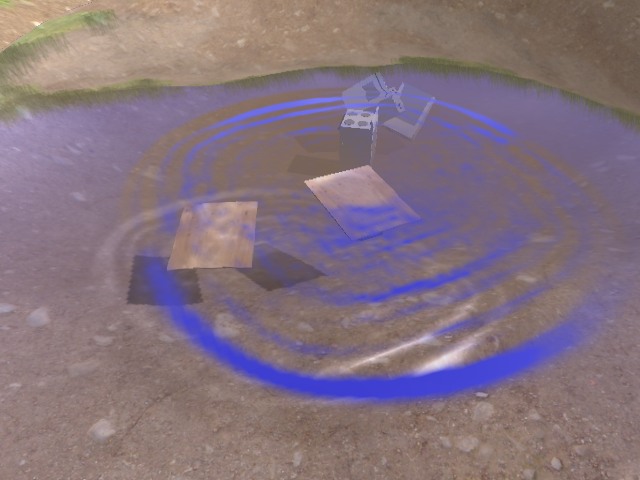
Under the water, the roles of reflection and refraction maps reverse. The under-water geometry is inverted and the above-water geometry is drawn normally. The ratio of indices of refraction is reciprocated. Aside from these, under water rendering is the same as above. In the shot below, a stove has just landed in the water in the distance. The caustics and shadow project on the floor, and we see them reflected in the water surface.
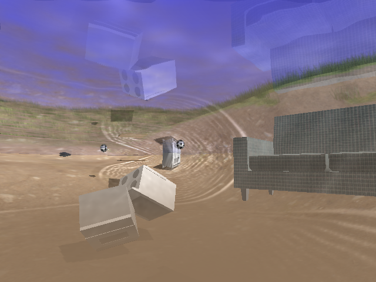A fog effect is used to make the water look muddy. The water depth of each vertex is computed and supplied as a varying variable to the terrain and object fragment staders, which use it to fade material toward the dirt color. This also has the effect of attenuating the caustics.
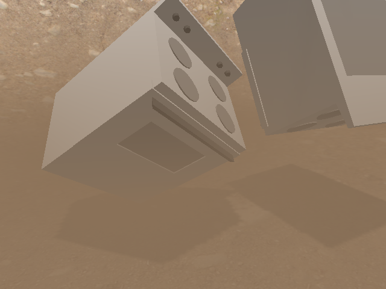The refractive effect of water is difficult to produce correctly. Invariably, it produces discontinuities in objects while they penetrate the water's surface. The degree of refractive distortion should vary with the depth of the object being distorted, but this is difficult to represent using texture coordinate offsets to a refraction map.
I decided that the discontinuity was more jarring than the physically-incorrect behaviour, and the refractive displacement is discarded entirely for objects that penetrate the surface, like this stove.
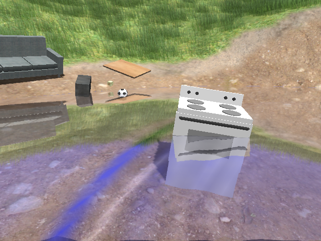The terrain is a 128x128 height map generated using The GIMP's Perlin noise filters. Once a height map was done, a derivative was taken and a blend map created. Areas of high magnitude derivative were colored blue in the blend map, areas of medium derivative green, and low derivate red. The terrain fragment shader reads this blend map and blends grass, rock, and sand textures based on the values in the map's three color channels. The result is high resolution texturing across a large expanse, but without ugly texture repetition.
The grass is drawn using planar polygons, position and oriented at random in the grassy areas of the terrain. The swaying of the grass is implemented using a vertex program. This technique is described in GPU Gems.
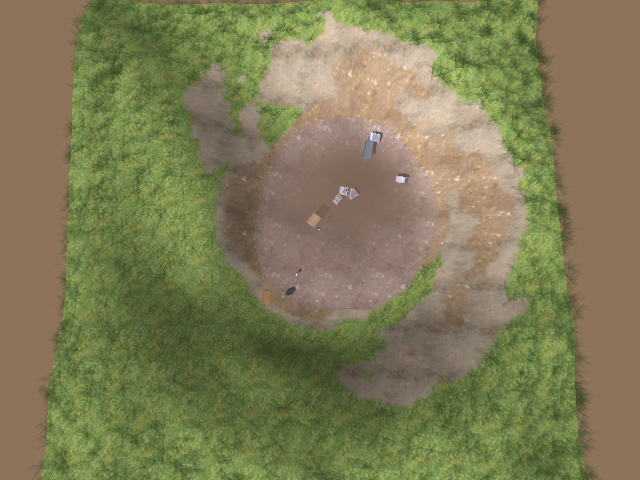The sky is a simplified model implemented by a fragment shader. The sky position of each pixel is measured from the position of the sun and the horizon, and color is distributed according to power functions of these distances. The clouds are represented using a 3D texture of Perlin noise. Translation along S and T causes the clouds to move, and translation along R makes them appear to evolve over time.
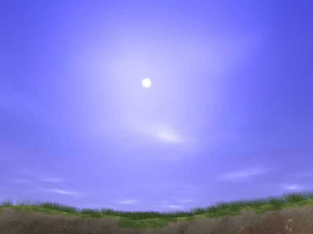The objects were modeled using Wings3D, stored as OBJ files, and loaded using my OBJ loader library. That's a stove, a couch, a soccor ball, a block of wood, a piece of plywood, and a box of Chinese takeout.
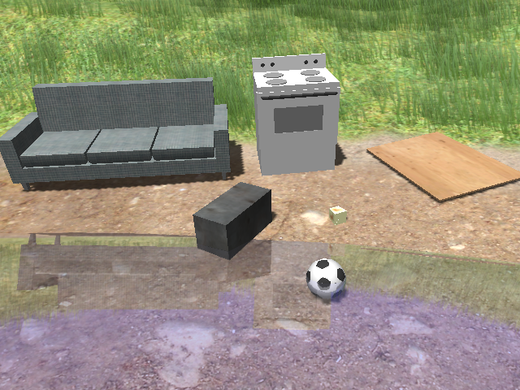Many behaviours emerge from the physical interaction of the objects and the water. Here, a soccor ball was kicked down the hill. It crated a wake as it skipped across the water.
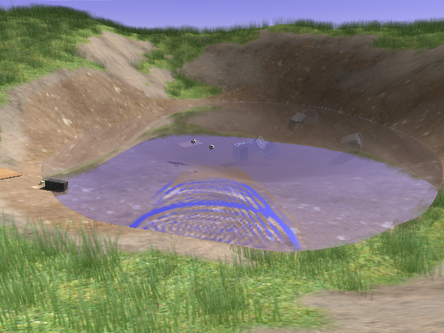Here's a shot from up on the hill, showing a little of everything.
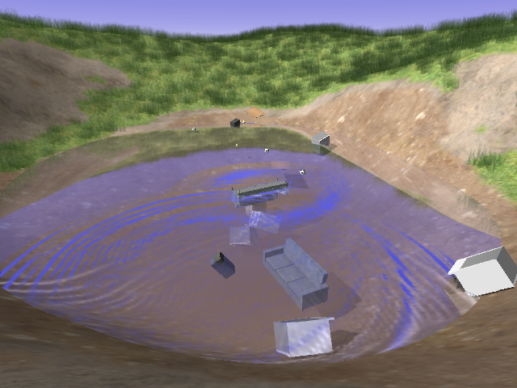